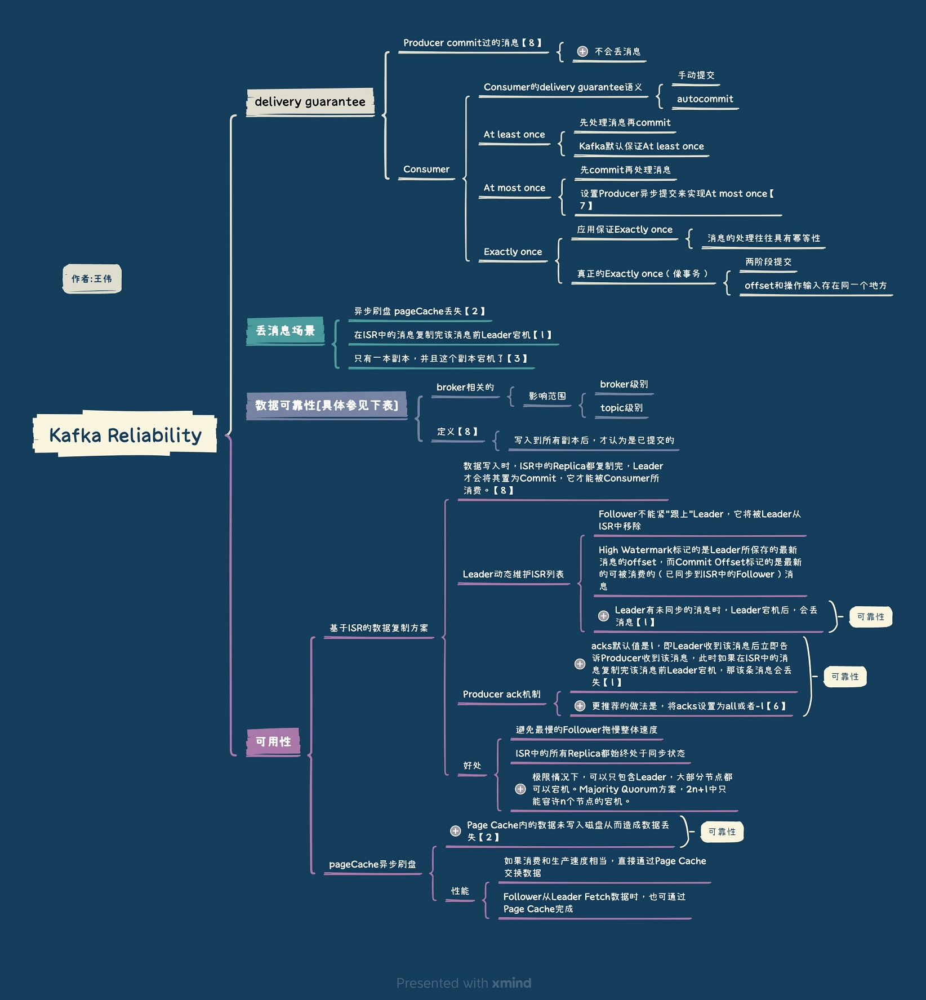

Kafka高可靠配置 #
| 位置 | 配置项 | 可靠性 |
|---|---|---|
| topic的配置 | replication.factor>=3,即副本数至少是3个 | 复制因子 replication.factor(topic级别) default.replication.factor(broker级别) |
| - | 2<=min.insync.replicas<=replication.factor 最少同步副本min.insync.replicas |
3副本（总） + 3副本，一般最少同步2副本 + 最少同步2副本时，如2副本挂了，这时不能写，只能读. 设置为1，单副本挂了，就会丢数据【3】 |
| broker的配置 | leader的选举条件unclean.leader.election.enable=false unclean.leader.election -> broker级别 |
1.允许不同步的副本成为首领 ，有数据不可靠的风险. 2.不允许不同步的副本成为首领 ，降低了可用性. 3. 强烈建议不要开启它，还可以通过其他的方式来提升可用性 |
| producer的配置 | request.required.acks=-1(all)【6】 producer.type=sync【7】 |
如何确保消息不会丢失 #
生产阶段 #
- 在编写发送消息代码时，需要注意，正确处理返回值或者捕获异常，就可以保证这个阶段的消息不会丢失。
捕获消息发送的错误，并重发消息。 - 异步发送时，则需要在回调方法里进行检查。这个地方是需要特别注意的，很多丢消息的原因就是，使用了异步发送，却没有在回调中检查发送结果。
存储阶段 #
- 通过配置刷盘和复制相关的参数，让消息写入到多个副本的磁盘上，来确保消息不会因为某个 Broker 宕机或者磁盘损坏而丢失。
Eg. 在 RocketMQ 中，需要将刷盘方式 flushDiskType 配置为 SYNC_FLUSH 同步刷盘
Eg. 表. kafka高可靠配置 topic的配置
消费阶段 #
- 在处理完全部消费业务逻辑之后，再发送消费确认。
检测消息丢失的方法 #
可以利用消息队列的有序性来验证是否有消息丢失。在 Producer 端，我们给每个发出的消息附加一个连续递增的序号，然后在 Consumer 端来检查这个序号的连续性。
Q&A #
- 怎么样才能确保Kafka极大程度上的可靠性？
- Kafka在可靠性方面做了哪些改进？（HW, LeaderEpoch）
Kafka 可靠性总结
参考: #
- Kafka设计解析（六）- Kafka高性能架构之道 郭俊
- kafka数据可靠性深度解读 朱忠华
- 《Kafka权威指南》 第6 章可靠的数据传递 薛命灯
- 《消息队列高手课 - 如何确保消息不会丢失？》 李玥